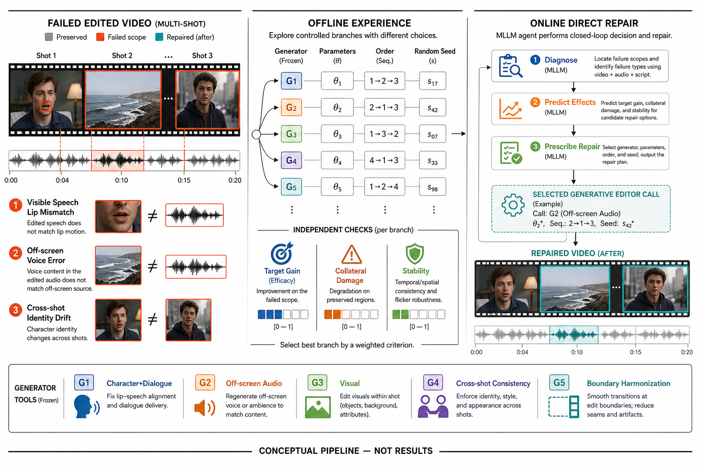
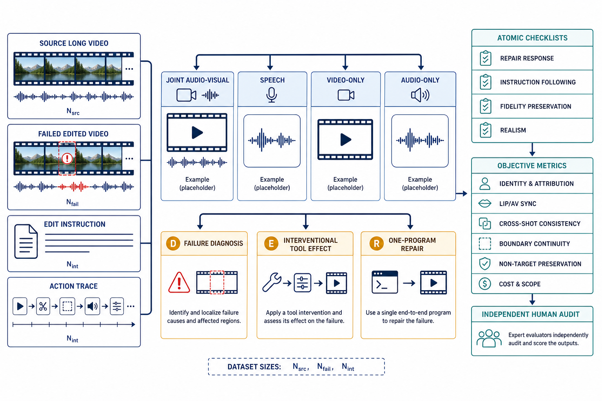
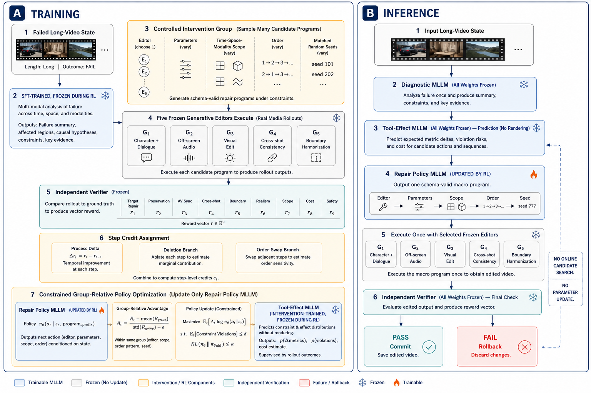

PersonaRepair
面向长视频多人物音画编辑的工具效果感知非退化修复
摘要
音视频编辑 Agent 已能将自然语言指令分解为视觉、语音和音频子任务，并调用专业工具生成结果。然而，在包含人物替换、台词修改、画外音编辑和纯视觉修改的长视频中，现有方法通常只能给出整体评价并重新运行整个分支，无法确定哪个人物的哪段音画关系失败，也无法预测重做会破坏哪些已经正确的内容。本文提出 PersonaRepair：一个面向长视频多人物音画编辑的诊断与修复框架。首先，身份感知错误定位器结合最终成片、人物轨迹、声纹、台词和工具轨迹，将失败定位到“人物—关系—时间—模态”单元，并预测责任操作。其次，Tool Effect Model 学习冻结编辑器对目标约束的修复增益、对保护约束的副作用及调用成本。最后，约束修复器选择满足目标且修改范围最小的候选；只有当目标错误下降且已正确邻域不退化时，结果才被接受。为系统评价该任务，我们设计覆盖画内/画外切换、跨镜头人物重现、多人交替和非目标保持的长视频协议。PersonaRepair 不替代通用 AVE-Agent，而是为其增加可定位、可归因和低破坏的可靠修复层。
1. 引言
现有音视频编辑系统越来越善于“生成一次结果”，但仍不善于回答：结果中的哪一处关系错了，以及怎样在不破坏正确内容的前提下修好它。
考虑一条真实后期需求：“将 12:10–13:00 的角色 A 替换为角色 B，把他说的‘明天见’改为‘周末见’，调整 18:03 的画外音语气，同时保持其他人物、背景和环境声。”系统需要在跨镜头范围内绑定人物外观、声纹和台词；在人物可见且嘴部清晰时联合修改语音与口型；在画外音区间只改变音频；在纯视觉编辑中锁定对白和环境声。三个专业模型即使单独表现良好，组合后仍可能产生人物身份漂移、台词归错说话者、局部唇音不同步、画外音污染画面或非目标声音消失。
近期工作已经覆盖了大量基础能力。InstructAV2AV [3] 可组合修改人物外观、音色和台词；AVI-Edit [4] 实现实例级音画同步编辑；CineSRD [5] 能在影视长视频中注册画内人物并补充画外说话者；MMLVE-Agent [6] 进一步研究多指令、多镜头长视频的一致编辑。与此同时，AVE-Compass/AVE-Agent [1] 将复杂音视频指令分解为任务拓扑，并通过 planner、executor 和 mixed evaluator 进行反思式重试。这些工作意味着“多工具 Agent”“跨模态任务图”和“评价后重新生成”本身已不能构成充分创新。

本文关注一个更窄但可验证的问题：如何在最终渲染结果中定位人物中心的跨模态失败，并根据专业编辑器的实际副作用选择最小的非退化修复？我们不把人物—镜头—音频图作为创新，因为 AVA-Encoder [2] 已提出可操作的 Film Knowledge Graph 与关联子图编辑；该图在本文中仅作为索引。核心方法围绕 Locate–Model–Repair 三步展开：
- 身份感知的细粒度音画错误定位。 在最终成片上预测失败人物、关系、时间区间、错误类型和责任操作，而不是只返回整体质量分数。
- Tool Effect Model。 从真实执行轨迹中学习每个冻结编辑器对目标约束的修复增益和对已正确内容的连带风险。
- 约束最小的单调非退化修复。 联合优化成功概率、修改范围和成本；候选只有在修复目标且保护邻域不退化时才进入已接受状态。
3. PersonaRepair
给定源视频 \(X=(V,A)\)、用户指令 \(q\)、初始编辑结果 \(\hat X\) 和工具轨迹 \(\tau=(a_1,\dots,a_n)\)，PersonaRepair 输出修复结果 \(X^\star\)。系统使用镜头检测、人物跟踪、ASR、speaker diarization、active-speaker detection 和声纹模型构建检索索引；这些前端可以替换，不作为核心贡献。三个冻结后端分别处理人物与台词联合替换、画外音修改和纯视觉修改。
一个可验证约束表示为：
其中 \(s_i,o_i\) 是人物、声纹、台词、轨迹或媒体区域，\(r_i\) 是关系，\(I_i\) 是证据时间区间，\(\mathcal M_i\) 是相关模态，\(y_i\) 是目标状态。约束分为：要求新人物/台词成立的目标约束，要求人物—声纹—台词—嘴部一致的耦合约束，以及要求背景、非目标人物和环境声不变的保护约束。

3.1 身份感知的细粒度音画错误定位
共享 Audio-Video MLLM 的 Diagnosis Adapter 接收 \(X,\hat X,q,\tau\) 以及按人物和时间检索的专业证据。对每个约束 \(c_i\)，诊断器输出：
其中 \(\hat z_i\) 是约束满足概率，\(\hat I_i\) 是失败证据区间，\(\hat e_i\) 是错误类型，\(\hat b_i\) 是责任动作分布。专业证据包括：ASR/forced alignment 检查台词内容和词边界；speaker verification 检查声纹；active-speaker 与 lip-sync 模型检查可见说话者和同步；人脸/人体特征检查跨镜头身份；源—结果掩码差异检查非目标视觉及音频保持。MLLM 负责处理这些证据之间的关系，而不是替代所有专用模型。
对于短错误，系统先在粗粒度窗口检测，再在高风险窗口预测起止边界。训练目标为：
监督来自真实失败和可控注入：单词替换、局部音频平移、声纹交换、错误 active speaker、身份漂移、画外音视觉泄漏以及非目标音频污染。故障参数提供精确时间与责任动作标签。低置信度身份或说话者不会触发自动生成，而进入人工确认。
3.2 冻结编辑器上的 Tool Effect Model
工具描述只能告诉 Agent “模型声称能做什么”，不能反映其在侧脸、遮挡、多人、混响或长镜头条件下的实际副作用。我们训练轻量 Tool Effect Model \(E_\psi\)，输入当前媒体状态摘要、候选动作 \(a_j\)、目标与保护约束，预测：
其中 \(g_{ji}\) 是动作修复失败约束 \(c_i\) 的概率，\(r_{ji}\) 是破坏已通过约束的概率，\(\hat\Omega_j\) 是预计影响的时间—空间—模态范围，\(\hat C_j\) 是计算或 API 成本。训练样本直接来自冻结编辑器的调用前后约束差分；模型采用 ensemble 表达认知不确定性，对未见工具和分布外状态使用悲观修复收益与保守风险上界。
Effect Model 必须独立评价，而不能只依靠端到端结果。实验报告约束差分误差、风险校准、候选工具排序和 leave-one-backend-out 泛化；否则它可能退化成普通工具分类器。
3.3 约束最小的单调非退化修复
对失败集合 \(\mathcal F\)，系统根据错误证据、责任动作和工具 schema 生成候选修复集 \(\mathcal A_R\)。候选动作显式指定工具、人物、时间区间、空间掩码、可写模态和参数。若声音正确而嘴型失败，候选仅开放视频嘴部；若目标是画外音，视觉模态保持只读。
令 \(x_j\in\{0,1\}\) 表示是否执行候选 \(a_j\)，\(d_j,s_j,c_j\) 分别表示重做时长、空间—模态范围和成本。优化目标为：
满足失败覆盖、保护风险、工具依赖和互斥约束：
我们使用整数规划求解候选集内的最小动作组合，但不将 ILP 本身作为贡献。动作先在当前已接受版本的副本上执行；验证器重新检查失败约束及与该动作共享人物、时间或模态的保护邻域。只有当目标缺陷下降且保护约束变化不超过容差时，候选才被接受，否则丢弃候选并保留原版本。因而更准确的表述是“单调接受的非退化修复”，而不是对所有感知属性作绝对无回退保证。
4. 实验
4.1 实验设置与评测协议
数据。 PersonaRepair-Bench 计划包含经过授权的编辑前后视频、指令、工具轨迹、跨镜头人物 ID、逐词台词、speaker/active/off-screen 标签，以及每个失败的时间区间和责任操作。主集合覆盖 2–20 分钟视频，压力集合覆盖 30–90 分钟。训练、验证和测试按作品与人物身份划分，避免同一人物泄漏。
任务。 包含人物＋台词＋声纹联合替换、只改台词、只改人物、只改画外音、纯视觉修改，以及这些操作在同一视频中的组合。困难条件包括相似人物、侧脸、遮挡、多人同屏、重叠语音、画内/画外切换和人物远距离重现。
基线。 比较无修复、全段重生成、固定窗口局部重做、直接 MLLM/ReAct、AVE-Agent 式 evaluator feedback、独立专业指标 ensemble、Crayotter 式选择性重执行及不使用 Effect Model 的规则规划。Oracle 错误区间和 Oracle 工具效果分别给出定位与规划上界。所有方法共享编辑后端、最大重试次数和调用预算。
指标。 诊断报告约束 Macro-F1、AUROC、校准误差、区间 mAP、Temporal IoU、边界误差和责任动作 Recall@k；生成质量报告 WER/CER、speaker/face identity、active-speaker、lip-sync、非目标视觉与音频保持；修复报告单轮与预算内成功率、No-Regression Rate、修改时长/区域比例、调用次数及实际成本。
4.2 端到端修复性能
| 方法 | 修复成功 ↑ | NRR ↑ | 非目标保持 ↑ | 修改时长 ↓ | 成本 ↓ |
|---|---|---|---|---|---|
| Full re-edit | 待测 | 待测 | 待测 | 待测 | 待测 |
| MLLM reflection | 待测 | 待测 | 待测 | 待测 | 待测 |
| AVE-Agent-style | 待测 | 待测 | 待测 | 待测 | 待测 |
| Metric ensemble + rules | 待测 | 待测 | 待测 | 待测 | 待测 |
| PersonaRepair | 待测 | 待测 | 待测 | 待测 | 待测 |
| Oracle localization | 待测 | 待测 | 待测 | 待测 | 待测 |
主结果需要同时支持三个结论：PersonaRepair 修复更多失败；重新编辑的媒体范围更小；缩小范围没有以破坏已正确内容为代价。仅提高整体 MLLM 偏好不足以证明方法有效。
4.3 错误定位与工具效果预测
| 诊断方法 | 约束 F1 ↑ | tIoU ↑ | Blame R@1 ↑ | ECE ↓ |
|---|---|---|---|---|
| Omni-MLLM judge | 待测 | 待测 | 待测 | 待测 |
| Independent metrics | 待测 | 待测 | 待测 | 待测 |
| w/o identity relation | 待测 | 待测 | 待测 | 待测 |
| PersonaRepair locator | 待测 | 待测 | 待测 | 待测 |
Tool Effect Model 另报告修复增益 MAE、风险 AUROC/ECE、工具排序 NDCG 和 Oracle gap，并进行 unseen-backend 测试。该结果决定它是否是可泛化效果模型，而不是三个固定工具的记忆表。
4.4 组件消融、泛化与失败案例
消融包括：去除专业 evidence tokens、去除时间定位监督、去除责任归因、用固定工具风险代替 Effect Model、移除保护约束、用贪心替代约束求解、只重验失败项而不检查邻域。控制实验提供 Oracle 人物轨迹、ASR、speaker、可见性和失败区间，分离感知、推理与编辑器上限。
泛化分析按视频时长、人物数量、镜头数量、错误数量、画外音比例和后端版本分桶。失败分析重点展示多人重叠语音、长期遮挡、相似声纹、极端外观变化和编辑器改变动作时长等情况。正式稿应使用真实的“源视频—初始编辑—诊断—修复—最终结果”，并报告多随机种子的均值与置信区间。
5. 局限性与结论
局限性。 PersonaRepair 依赖人物跟踪、ASR、声纹和 active-speaker 前端；当人物长期不可见、多人同时发声或声纹高度相似时，约束本身可能不可辨识。式 (5) 只保证给定候选集和预测效果下的最小解，不代表所有生成操作上的全局最小。No-Regression 也仅针对已枚举约束及验证器成立。自动指标必须由专业编辑师评价校准。
社会影响。 人物、台词和声纹替换具有显著冒充风险。所有训练和评测素材必须获得授权；输出应包含可见/不可见水印、C2PA 类 provenance 和完整编辑日志；真实人物身份编辑需要授权策略与拒绝机制。
结论。 本文提出 PersonaRepair，将长视频音视频编辑后的整体反思重试，转化为身份感知错误定位、工具效果预测和约束最小的单调非退化修复。它不与通用音视频编辑 Agent 竞争任务覆盖，而是补充其缺失的可靠性层：明确指出哪个人物的哪段关系失败、哪次操作可能负责，以及怎样只重做必要部分。
参考文献
- Y. Wen et al. AVE-Compass: Towards Holistic Evaluation for Audio-Video Editing Abilities. arXiv, 2026.
- H. Duan et al. AVA-Encoder: Towards Agent-Native Video Representation Learning. arXiv, 2026.
- H. Zheng et al. InstructAV2AV: Instruction-Guided Audio-Video Joint Editing. SIGGRAPH Asia, 2026.
- H. Zheng et al. Audio-sync Video Instance Editing with Granularity-Aware Mask Refiner. CVPR, 2026.
- Y. Huang et al. CineSRD: Open-World Visual Media Speaker Diarization. CVPR, 2026.
- W. Wu et al. Thinking on Shots: Consistent Multi-Shot Video Editing with Agentic Reasoning. arXiv, 2026.
- Z. Jiang et al. VACE: All-in-One Video Creation and Editing. ICCV, 2025.
- Y. Cong et al. VIVA: VLM-Guided Instruction-Based Video Editing with Reward Optimization. CVPR, 2026.
- X. Zhou et al. MTAVG-Bench: A Diagnostic Benchmark for Multi-Talker Dialogue-Centric Audio-Video Generation. ACL, 2026.
- Y. Lin et al. JarvisEvo: Towards a Self-Evolving Photo Editing Agent. CVPR, 2026.
- HKUDS. VideoAgent: All-in-One Framework for Video Understanding and Editing. arXiv, 2026.
- Y. Zheng et al. Crayotter: Traceable Multi-Agent Workflows for Long-Form Video Editing. arXiv, 2026.
- H. Randall et al. RefineCut: Verifier-Guided Iterative Refinement for Timeline Editing. EMNLP, 2026.
PersonaRepair-X
面向长视频多人物音画编辑的干预学习与约束式单程序修复
摘要
长视频音画编辑 Agent 往往依靠“评价—重试”修正结果，但生成编辑器具有状态依赖、顺序交互和随机性：同一操作在不同种子下可能产生不同人物身份、唇音同步与非目标损伤。观察日志又只记录旧策略选择过的动作，无法可靠回答换工具、换参数、换范围或换顺序后的结果。本文提出 PersonaRepair-X，并配套构建 PersonaRepair-X-Bench。Benchmark 将失败诊断、干预效果预测和单程序修复分为三个任务轨道，覆盖联合音画、语音、纯视觉与纯音频四类编辑，并以人物—关系—时间证据、原子 checklist 和独立客观指标评价目标完成与保护约束。Agent 包含三个可训练 MLLM：Diagnostic MLLM 定位失败，Interventional Tool-Effect MLLM 预测动作序列的约束转移分布，Repair Policy MLLM 输出一个结构化修复程序；人物与台词、画外音、纯视觉、跨镜头一致性和边界协调五个生成编辑器始终冻结。离线阶段在合法动作空间内随机化工具、参数、顺序、范围与种子，并在真实沙盒中形成同状态、同种子配对的 rollout group。基于这些轨迹，我们提出干预落地的约束式程序强化学习，以向量奖励、组相对优势、逐操作过程收益、删除/换序反事实信用和风险约束训练修复策略。线上仅诊断一次、预测一次并生成一个完整程序；程序执行后只允许验收或回滚，不进行候选视频搜索。所有数据规模与结果留待实测。
1. 引言
PersonaRepair-X 不再问“怎样再生成一次”，而是问：面对一个已经失败的长视频，哪一个完整修复程序在随机编辑器下最可能修好目标，同时不破坏已经正确的人物、台词、背景和声音？
例如，用户要求将跨越多个镜头的角色 A 替换为角色 B，并重写可见对白，同时只调整另一段画外音。初始结果可能在正脸镜头成功，却在遮挡后恢复为 A；对白内容正确但声纹属于另一人物；局部重绘还可能在补丁边界产生口型跳变并删除环境声。此时全段重生成扩大了可写区域，逐个在线试工具又会消耗昂贵生成调用。更关键的是，相同工具、参数与区间在不同随机种子下也可能给出相反结论。
AVE-Compass/AVE-Agent [1] 已把自由音视频指令分解为依赖 DAG，并通过 Executor 自检和 Mixed Evaluator 决定通过、重混、子任务重生成或重规划。因此，“多工具规划 + evaluator 反馈”不是本文的新颖点。JarvisEvo [2] 已在照片编辑中以 iMCoT 观察工具结果，并用 SEPO 的 Editor/Evaluator 双循环和基于自评分组胜率的 GRPO 优化工具使用。因此，“采样多条轨迹 + 相对奖励 + 自我反思”也不是本文的新颖点。

二者留下的共同空缺是随机长视频修复中的受控动作比较。历史轨迹受旧策略选择偏差影响；一次 evaluator 分数不能分离工具、参数、范围、顺序和随机种子的作用；终局分数广播给整条程序也无法判断哪一步修复了目标、哪一步造成了副作用。我们将工具调用视为可控实验，在相同失败状态上记录：
其中 \(s\) 是失败媒体、人物关系、保护条件与历史组成的状态，\(P\) 是一次性输出的短程序，\(\Delta\mathbf c\) 是目标和保护 checklist 的变化，\(\Omega\) 是实际影响范围，\(c\) 是执行成本。“干预”只表示动作在已记录的合法支持内被随机分配；本文不把它外推为任意新工具上的因果保证。
- PersonaRepair-X-Bench。 在 AVE-Compass 的四分支音视频 taxonomy 上增加诊断、工具效果与单程序修复三个轨道，并提供人物—关系—时间失败、工具责任、随机种子与保护约束标注。
- 随机干预式工具效果学习。 对工具、参数、范围、顺序与种子做合法、分层、带倾向概率的随机分配，训练独立的 Tool-Effect MLLM 预测分布而非单点工具排名。
- 不是标量 GRPO 的 Agentic RL。 在真实冻结编辑器环境中，用配对 rollout group、向量奖励、组相对分量优势、过程增量、删除/换序信用、CVaR 风险和原始—对偶约束优化 Repair Policy。
- 线上单程序协议。 三个 MLLM 与五个冻结编辑器职责分离；线上不渲染候选、不反思重试，只提交一个 schema 合法的程序，执行后验收或回滚。
3. PersonaRepair-X-Bench: Benchmark & Evaluation
每个样本以 \(\mathcal E=(X,q,Y_0,\tau_0,\mathcal C,\mathcal I)\) 表示：\(X\) 为源音视频，\(q\) 为原编辑指令，\(Y_0\) 为待修复结果，\(\tau_0\) 为初始工具轨迹，\(\mathcal C\) 为目标与保护约束，\(\mathcal I\) 为随机干预记录。Benchmark 不把所有问题混成一个 leaderboard，而是设置三个可单独提交的任务轨道。

| 任务轨道 | 输入 | 必须输出 | 核心问题 | 主要指标 |
|---|---|---|---|---|
| D：Failure Diagnosis | \(X,q,Y_0,\tau_0\) | 人物、关系、模态、区间、failure type、责任操作、置信度 | 错在哪里、影响谁、可能由哪步造成 | Macro-F1、interval mAP/tIoU、Blame R@k、ECE |
| E：Interventional Effect | 失败状态与候选程序 \(P\) | 每条约束的变化分布、影响范围、成本、尾部风险 | 执行这个程序会发生什么 | NLL/CRPS、MAE、risk AUROC/ECE、NDCG、regret |
| R：One-Program Repair | 完整失败状态 | 一个结构化程序与一次执行结果 | 能否一次修好且不伤害保护内容 | Joint Repair@1、NRR、CVaR、范围、调用与成本 |
编辑任务 taxonomy。 为与 AVE-Compass 直接可比，一级操作仍采用四分支；PersonaRepair-X 只收录五个冻结编辑器可合法处理的任务，不用不存在的后端扩大覆盖。
| AVE 对齐分支 | PersonaRepair-X 子任务 | 必须锁定的非目标 | 主要编辑器 |
|---|---|---|---|
| Joint A/V | 可见人物替换 + 台词/声纹/口型；画内—画外切换；局部联合边界 | 其他人物、对白、环境声、背景与镜头节奏 | G1 + 必要的 G4/G5 |
| Speech | 可见对白内容、说话人归属、声纹、韵律、时长；画外音内容/音色/时序 | 非目标说话人、音乐、环境声和无关画面 | G1 或 G2，必要时 G5 |
| Video-only | 纯视觉人物/动作/属性修复；跨镜头身份与场景一致性 | 完整音轨只读 | G3/G4，必要时 G5 |
| Audio-only | 画外音内容、说话人、韵律、响度与时间位置修复 | 完整画面只读；非目标音轨保持 | G2，必要时 G5 |
每个任务再按结构难度标注：单人物/多人物、单镜头/跨镜头、画内/画外/切换、单 failure/复合 failure、非重叠/重叠语音、无遮挡/遮挡、短边界/长范围，以及动作链长度 \(T\)。这些是分析轴，不应重复计为新的任务数量。
Failure taxonomy。 一个失败可多标签表示为 \(f=(p,\rho,I,\mathcal M,e,b,u)\)，其中 \(p\) 是人物或对象，\(\rho\) 是违反关系，\(I\) 是证据区间，\(\mathcal M\) 是模态，\(e\) 是下表类别，\(b\) 是责任工具/步骤，\(u\) 是不可辨识或不确定标志。
| 一级 failure | 二级标签 | 最小证据 | 与保护约束的关系 |
|---|---|---|---|
| 目标执行 | non-response、错目标、语义错误、局部遗漏、范围不足/过度 | 指令目标与失败区间 | 目标未完成不能靠“完全不改”获得高分 |
| 人物与归属 | 脸/身体身份漂移、声纹错误、台词归错人、人物交换 | 人物轨迹、声纹、逐词对齐 | 非目标人物必须保持 |
| 音画耦合 | 唇音不同步、active speaker 错、事件声错位、画内/画外状态错误 | 嘴部、语音/事件边界与可见性 | 联合约束不能拆成两个独立高分 |
| 长程与边界 | 跨镜头身份/场景不一致、入口/出口跳变、音画接缝、时长漂移 | 相邻边界与远距离重现镜头 | 局部修复不得把缺陷推到边界外 |
| Fidelity | 背景、其他人物、对白、音乐、环境声被删除/替换/新增 | 源—结果非目标掩码或音轨 | 直接定义保护约束违反 |
| Realism | 视觉伪影、运动抖动、语音失真、混响/材质不合、物理不一致 | 结果本身及局部上下文 | 与 IF/FP 分开报告 |
| 程序与工具 | 非法 schema、工具错配、参数越界、依赖/顺序错、写锁违反 | 完整程序与执行日志 | 执行前硬拒绝 |
| 随机不稳定 | 跨种子方差大、下尾失败、偶然成功 | 同程序多种子结果 | 由下尾风险而非单次最好结果衡量 |
3.1 数据构造
所有尚未实际收集的规模只使用下列符号。正文、图注和表格不得提前替换成经验数字。
| 符号 | 含义 | 正式稿填写规则 |
|---|---|---|
| \(N_{\mathrm{src}}\) | 授权源长视频数 | 去重、过滤后计数 |
| \(N_{\mathrm{ins}}\) | 人工确认的编辑指令数 | 按最终保留指令计数 |
| \(N_{\mathrm{fail}}\) | 真实与受控失败状态数 | 两类分别报告，不混合 |
| \(N_{\mathrm{item}}\) | 去重后的原子 checklist 数 | 按最终审校版本计数 |
| \(N_{\mathrm{int}}\) | 合法干预程序数 | 程序而非单工具调用计数 |
| \(K_z\) | 每个核心程序的随机种子数 | 报告分布与缺失执行 |
| \(T_{\max}\) | 修复程序最大原子操作数 | 由协议预注册 |
| \(N_{\mathrm{human}}\) | 专业人工复核样本数 | 报告抽样规则与一致性 |
源视频与指令。 收集经过授权、具备有效音轨且人物/声音来源可辨识的长视频，覆盖多镜头、多人、遮挡、画外音和重叠语音。标注镜头、人物轨迹、可见说话人、声纹、逐词时间、背景与音频 stem；真实人物的外观/声音修改必须具备明确授权。指令可由模板和 LLM 提议，但须经过可编辑性、自然性、人物授权与跨模态后果的人工审查。
初始失败池。 使用固定版本的五个冻结编辑器产生初始结果，保留自然发生的失败；另在可精确控制的位置注入身份交换、台词错配、音频偏移、边界截断和非目标污染等故障。真实失败用于外部有效性，受控故障用于区间与责任监督，两类结果必须分表报告。干净的成功样本作为 no-repair 对照，用于测量误触发率。
随机干预采集。 对状态 \(s\) 先由工具注册表构造合法动作空间 \(\mathcal A_{\mathrm{legal}}(s)\)，再预注册一个可覆盖的干预支持集 \(\mathcal A_{\mathrm{int}}(s)\subseteq\mathcal A_{\mathrm{legal}}(s)\)，并按分层分配概率采样工具序列 \(\mathbf g\)、参数 \(\boldsymbol\theta\)、时间—空间—模态范围 \(\boldsymbol\Omega\)、操作顺序 \(\pi\) 和随机种子 \(\mathbf z\)：
每个 block 固定同一失败状态，并包含 no-op、单工具、删除关键工具、参数扰动、范围扩缩、关键工具对的顺序交换和多种子重复。保存实际分配概率，便于检查 positivity、重加权与选择偏差。均匀随机只作为基线；正式采集可在 strata 内做不确定性或决策敏感采样，但测试集必须来自独立、固定的随机协议。
结果标注。 每次执行保存输入、程序、工具版本、参数、种子、中间媒体、最终媒体、运行成本和失败日志。独立检查器在每一步记录约束向量：
\(J_{\mathrm{ind}}\) 不与三个训练 MLLM 共享参数；其阈值只在开发集和人工子集上校准。对“不可从媒体辨认”的标签显式标记 unknown，而不是强行给出伪精确责任。
Checklist 生成。 将每条指令和 failure 分解成自洽的肯定式 Yes/No 条目。条目模式为 \(q_j=(\mathrm{id},d,s,m,p,I,e,r)\)：维度 \(d\)、子维度 \(s\)、模态 \(m\)、人物 \(p\)、证据区间 \(I\)、所需证据 \(e\) 和问题文本 \(r\)。删除复合问题、双重否定、不可见证据和“整体看起来不错”式问题；人工只合并在同一证据下必然同答的重复项。
Split 与防泄漏。 train/val/test 按作品、原始人物身份和源音频分组切分；另设 editor-version OOD、未见人物 OOD 与未见操作组合 OOD。相同失败状态的所有工具、顺序和种子分支必须位于同一 split。测试指令、人物参考帧和干预结果不得进入 SFT、Tool-Effect 预训练或 verifier 校准。
3.2 评测方法
遵循 AVE-Compass，主观语义判断与可复现客观指标分开报告；不同任务只激活有意义的指标，缺失项不填零。主分数不能掩盖不响应、过度编辑或随机尾部失败。
3.2.1 Checklist-based MLLM 与人工评价。 Checklist 维度包括 Repair Response（RR，只描述目标模态是否发生变化）、Instruction Following（IF，目标是否修好）和 Fidelity Preserving（FP，非目标是否保持）。Realism（REAL）使用独立 rubric，不混入 checklist。音频条目只输入音频对，视频条目只输入视频对，general 条目输入联合音视频，降低跨模态暗示。
与 AVE-Compass 的 Editing Intent 对齐，报告 \(S_{\mathrm{RI}}=S_{\mathrm{IF}}S_{\mathrm{FP}}\)；同时给出更严格的 Joint Repair@1：目标 checklist 全通过、预注册保护项全通过且程序合法时才记为成功。RR 不进入正确性分数，只用于揭示“不修改却获得高 FP”的假象。专业编辑师在 \(N_{\mathrm{human}}\) 个分层样本上分别评价目标正确、人物可信、唇音/事件同步、接缝、非目标保持和整体偏好，并报告标注者一致性、置信区间及与自动评分的一致性。
3.2.2 客观评价。
| 对象 | 必须报告的客观指标 | 关键防作弊规则 |
|---|---|---|
| Diagnostic | failure/person/relation Macro-F1，interval mAP、tIoU、边界 MAE，Blame Recall@k，Brier/ECE，clean false-trigger rate | unknown 单列；不能用最终修复结果反标诊断 |
| Tool-Effect | 约束增量 NLL/CRPS/MAE，风险 AUROC/AUPRC/ECE，范围 IoU，成本 MAE，排序 NDCG、Top-1 regret，方差与下尾 CVaR 误差 | 按未见人物、组合和编辑器版本报告；与固定工具排名比较 |
| Repair | Target Success@1、Joint Repair@1、No-Regression Rate、保护项违反数、下尾成功率/CVaR、程序合法率 | no-op 和 rollback 不算修复成功；失败样本不靠小范围获得优势 |
| 效率 | 成功样本的时间/空间/模态修改比例，程序长度，在线生成调用、延迟、GPU/API 成本；离线成本另表 | 离线干预成本不得摊入或隐藏于在线成本 |
| 人物与语音 | face/body ReID，speaker similarity，ASR WER/CER，speaker attribution，active-speaker accuracy | 按人物和区间计算，不能只取全片均值 |
| 音画与媒体 | lip-sync、AV event offset、视觉非目标相似度、音频 stem/spectral similarity、motion smoothness、speech/audio/video quality | 只在对应 taxonomy 激活；保护指标使用源参考 |
| 长程与边界 | cross-shot identity consistency、入口/出口局部跳变、音频 click、边界前后运动/声学连续性 | 边界窗口与内部窗口分开，防止缺陷外移 |
对随机程序 \(P\) 同时报告均值与风险：
其中 \(\mathrm{CVaR}^{-}\) 衡量最差尾部，\(\alpha,\kappa\) 必须在看测试集前预注册。修改范围只在 Target Success@1 成功子集上汇报，并另报全体拒绝率，避免“全部回滚”伪装成完美保持。
4. PersonaRepair-X Agent
| 组件 | 训练状态 | 唯一职责 | 明确禁止 |
|---|---|---|---|
| Diagnostic MLLM \(D_\phi\) | 可训练 | 把失败压缩为人物—关系—时间记录 | 不选工具、不产生媒体、不充当 reward |
| Interventional Tool-Effect MLLM \(E_\psi\) | 可训练 | 预测候选程序的约束转移分布与不确定性 | 不直接给最终验收标签 |
| Repair Policy MLLM \(\pi_\theta\) | 可训练 | 一次输出完整结构化程序 | 不输出像素/波形，不在线反思重试 |
| G1 人物 + 台词 | 冻结 | 可见人物、对白、声纹与口型联合编辑 | 不得被 RL 更新 |
| G2 画外音 | 冻结 | 画外语音内容、音色、韵律和时序 | 视觉默认只读 |
| G3 纯视觉 | 冻结 | 人物/物体/动作/属性视觉编辑 | 音频只读 |
| G4 跨镜头一致性 | 冻结 | 远距离重现的人物身份与场景连续 | 不能替代局部目标编辑 |
| G5 边界协调 | 冻结 | 修复补丁入口/出口的画面、动作和音频接缝 | 不得越过写锁扩大内容修改 |
| \(J_{\mathrm{ind}}\) + validator | 冻结/人工校准 | 训练反馈、隐藏测试评价、提交/回滚 | 不与三个 MLLM 共享梯度或自评分 |

4.1 问题定义与分层架构
给定源视频 \(X=(V,A)\)、指令 \(q\)、失败结果 \(Y_0\)、初始轨迹 \(\tau_0\) 和不可修改项 \(\mathcal C^{-}\)，Diagnostic MLLM 先产生失败集合 \(\widehat{\mathcal F}=D_\phi(X,q,Y_0,\tau_0)\)。目标是生成一个程序 \(P^\star\)，使目标约束 \(\mathcal C^{+}\) 被满足，同时限制保护违反、随机风险、修改范围与成本。
程序解码过程是一个约束 semi-MDP。第 \(t\) 个决策状态为：
\(h_{<t}\) 是已生成的程序前缀，\(b_t\) 是剩余调用/范围/成本预算，\(\widehat{\Delta\mathbf c}_{<t}\) 是 Tool-Effect MLLM 对前缀效果的 belief。线上解码时它是预测状态；离线沙盒 rollout 时同时保存真实媒体状态以产生训练信用。
每个原子动作是：
其中 \(g_t\in\{\mathrm{G1},\ldots,\mathrm{G5}\}\)，\(u_t\) 为人物/音轨目标，\(I_t\) 为时间区间，\(M_t\) 为空间/音频 mask，\(W_t\) 为可写模态，\(\theta_t\) 为工具参数，\(z_t\) 为种子策略，\(\mathrm{dep}_t\) 为依赖。宏动作 \(P=[a_1,\ldots,a_T,\mathrm{STOP}]\)，\(T\le T_{\max}\)。所谓“线上单次”是 Repair Policy 只生成并提交这一个宏程序；程序内部在必要时可有短依赖链，而不是把所有任务强行退化为单工具。若部署要求严格单工具，只需预注册 \(T_{\max}=1\)。
{
"program": [
{
"editor": "G1_PERSON_DIALOGUE",
"target": "person_P03",
"interval": ["t_start", "t_end"],
"region": "track_face_P03",
"writable": ["mouth_region", "target_speech"],
"locked": ["other_people", "background", "music", "ambience"],
"parameters": {"dialogue_ref": "approved_text", "voice_ref": "consented_ref"},
"seed_policy": "lower_tail_safe",
"depends_on": []
},
{
"editor": "G5_BOUNDARY_COORDINATION",
"target": "patch_boundary",
"interval": ["t_start-margin", "t_end+margin"],
"writable": ["declared_boundary_band"],
"locked": ["dialogue_content", "non_target_tracks"],
"depends_on": [0]
}
],
"stop": true
}
4.2 离线干预环境与三个可训练 MLLM
环境 \(\mathcal M=(\mathcal S,\mathcal A_{\mathrm{legal}},\mathcal T, \mathbf R,\mathcal B)\) 由五个冻结编辑器、媒体合成器、独立检查器和预算 \(\mathcal B\) 构成。动作不是文本模拟：训练 rollout 必须真正执行冻结工具，得到
Tool-Effect MLLM 可用于低成本 proposal 和不确定性采样，但不得用自己的预测替代最终 RL reward；否则策略会学习攻击同一个世界模型。
一个 rollout group 固定同一初始状态 \(s_0\)，从旧策略采样 \(G_R\) 个合法程序，并加入 no-op、SFT anchor 和已知安全程序。所有程序尽可能共享同一外生种子 block \(\mathcal Z=\{z_1,\ldots,z_{K_z}\}\)：
同状态控制内容难度，同种子 block 降低随机工具比较方差；工具不共享种子语义时，使用预注册的 matched seed index 与重复 block，而不声称逐随机变量完全相同。删除、范围收缩和顺序交换分支用于步骤级反事实信用。
三个可训练 MLLM。 Diagnostic MLLM \(D_\phi(X,q,Y_0,\tau_0)\) 输出一组 \((p,\rho,I,\mathcal M,e,b,u)\)。输入可包含 ASR/forced alignment、speaker verification、active-speaker、lip-sync、ReID、镜头与源—结果差异 token。训练目标为：
在成功样本上另训 abstain/no-repair，避免把任何视频都诊断成需要修改。
Interventional Tool-Effect MLLM。 \(E_\psi\) 对完整程序及前缀预测每条约束的分位数/概率、实际范围和成本：
序列位置与 tool-pair token 区分 G1→G4 和 G4→G1；多种子标签监督方差与下尾。\(do(P)\) 的解释严格限于 \(p_{\mathrm{int}}\) 有支持且随机化成立的动作，不承诺跨新编辑器的因果外推。
Repair Policy MLLM。 \(\pi_\theta(P\mid s_0,D_\phi,E_\psi)\) 使用 grammar-constrained decoder 输出程序。先模仿人工/Oracle-Pareto 程序，再进入真实工具环境的 Agentic RL。策略看得到 Effect 的分布与不确定性，但最终 reward 只来自独立执行结果。三个 MLLM 不共享输出头；消融可比较共享 backbone，但主方法应避免角色串扰。
4.3 干预落地的约束式 Agentic RL
奖励向量，而非单一自评分。 对程序 \(P_i\) 和种子 \(z_k\)，独立环境返回：
前六项分别对应目标、保护、音画耦合、跨镜头、边界和真实感；后三项是修改范围、执行成本和安全违反。每个分量保留原值单独报告，训练时先按式 (5) 聚合多种子均值与下尾，不能用一个高美学分抵消人物授权、写锁或保护项失败。
组相对分量优势。 在同一 \(s_0\) 的 rollout group 内，对每个分量用稳健中心和尺度归一化：
先做可行性排序：满足所有硬约束的程序永远优先于不可行程序；不可行程序的正优势截为零。可行集合内部再组合目标与质量优势，约束项使用动态对偶变量而非固定拍脑袋权重：
这里 \(\mathcal Q\) 仅含预注册的非安全质量项。保护回退概率、范围、成本和下尾失败分别有预算 \(\varepsilon_\ell\)，测试前固定。
过程与终局 credit。 每个真实执行前缀都产生约束增量，形成过程 reward：
终局结果仍需防止“先破坏后修回”或把问题移出窗口。对每个操作再使用真实删除分支，缺失时才用经过校准的 Effect 预测作保守估计：
\(U\) 是由式 (12)–(14) 在独立实测结果上得到的可行终局效用；\(D_{i,t}\) 识别该步的边际作用，\(I_{t,u}\) 识别换序交互。用于第 \(t\) 步的优势为：
只把 \(A_{i,t}\) 赋给该操作的 editor、target、scope、parameter 与 dependency token；固定 JSON 标点不学习 reward，终局优势也不再无差别广播到整条轨迹。
策略更新。 使用带参考 KL 的原始—对偶 clipped policy optimization：
这不是把 JarvisEvo 的终局自评分换成另一标量后套 GRPO：组由随机干预 block 定义，reward 来自真实冻结工具和独立检查器，优势是多分量、风险约束且逐操作分配，并额外使用删除/换序反事实。若这些要素被拿掉，方法应诚实命名为“GRPO baseline”。
保护约束。
- 执行前硬约束：JSON schema、工具输入类型、人物授权、参数域、依赖 DAG、时间/区域范围、可写模态、最大程序长度与预算由确定性 validator 检查；非法动作在解码时 mask。
- 执行中隔离：每步写入版本化副本，锁定 stem、人物轨迹和区域；G5 只能写声明的 boundary band，不能借“协调”全局重绘。
- 随机风险约束：限制 \(\Pr_z[\text{任一保护项回退}]\)、成本和范围，并优化下尾 CVaR，而不是选择多种子中的最好一次。
- 防 reward hacking：三个 MLLM 的自评、解释和 Effect 预测都不能作为最终 reward；使用冻结指标 ensemble、隐藏 checklist、人工审计与 editor-version OOD，定期检查 proxy—human gap。
- 提交保护：独立 verifier 只做 accept/rollback。rollback 记为一次修复失败和已消耗成本，不能触发第二个在线生成程序。
4.4 训练阶段与线上推理
| 阶段 | 更新模块 | 数据与目标 | 进入下一阶段的门槛 |
|---|---|---|---|
| 0. Benchmark 与干预采集 | 不更新模型 | 固定工具版本；采集真实/受控失败、随机程序、多种子与每步约束差分 | 支持覆盖、标注一致性、split 无泄漏 |
| 1. 诊断冷启动 | \(D_\phi\) | 多任务 SFT + 区间定位 + 责任与校准 | clean 误触发、分桶 F1 与 ECE 达到预注册标准 |
| 2. 效果分布学习 | \(E_\psi\) | 干预 NLL/CRPS、范围、成本、排序、下尾校准 | 优于同规模观察日志与固定工具先验 |
| 3. Policy 冷启动 | \(\pi_\theta\) | 人工/Oracle-Pareto 程序 SFT；grammar 与 action mask | 程序合法率和工具适用性通过 |
| 4. Agentic RL | 只更新 \(\pi_\theta\) | 真实 sandbox rollout group；式 (12)–(18) | 隐藏 verifier 与人工子集同步提升，无约束恶化 |
| 5. 单程序蒸馏与校准 | \(\pi_\theta\)，必要时离线刷新 \(D/E\) | 将最佳可行 rollout 蒸馏为一次输出；固定测试前阈值 | 真实 open-loop 推理与训练 rollout 的 gap 可接受 |
不做用户任务内的参数更新。新在线日志只能进入隔离经验池，重新随机干预、离线训练并通过固定回归集后发布新版本；因此本文不滥用“实时自进化”表述。
线上单次修复程序。
- Diagnostic MLLM 对 \(X,q,Y_0,\tau_0\) 运行一次，输出失败集合、保护集合和不确定项；高风险身份不确定时直接 abstain。
- 工具注册表生成少量合法程序模板；Tool-Effect MLLM 只在特征空间预测目标增益、保护风险、范围、成本与下尾，不渲染媒体。
- Repair Policy 在一次受约束解码中输出一个完整程序 \(P^\star\)。若 schema/授权/预算不合法，则拒绝执行，不进行第二次采样。
- Executor 按依赖执行该程序一次。程序含多个原子操作时属于同一预提交事务，中途不调用 Repair Policy 重规划。
- 独立 verifier 对目标、保护、边界和授权复验：全部通过则 commit，否则 rollback。两者都记录实际成本；rollback 不算成功。
式 (19) 表示策略学习到的决策准则，不意味着线上枚举并渲染所有 \(P\)。最终只产生一个程序和至多 \(T_{\max}\) 个其中声明的冻结工具调用。
与 AVE-Agent、JarvisEvo 的差异。 下表只比较方法事实；本文不以 Agent 数量或通用 RL 组件作为贡献。
| 维度 | AVE-Agent [1] | JarvisEvo [2] | PersonaRepair-X |
|---|---|---|---|
| 问题 | 从源视频和自由指令完成音视频编辑 | 照片的保真/生成式编辑 | 给定失败长视频后的多人物音画修复 |
| 执行形态 | Planner DAG；Executor 局部反思；Mixed Evaluator 可重混、重生成、重规划 | iMCoT 反复观察图像、选工具、自评和反思 | 线上只预提交一个 open-loop 修复程序；结束后 commit/rollback |
| 工具知识 | 工具路由、prompt 改写和当前 evaluator 反馈 | on-policy 图像观察与历史工具轨迹 | 随机化工具/参数/范围/顺序/种子的约束转移分布 |
| 随机性 | 论文重点不是同状态多种子因果比较 | 组内多轨迹相对偏好，不显式分解随机编辑器下尾 | matched seed block、分布预测与 CVaR 约束 |
| 学习 | 所述系统是模块化规划、自检与反馈重试，不是干预式策略 RL | SEPO：Editor/Evaluator 双循环；Editor 用自评 win-rate GRPO，Evaluator 用人工分数对齐 RL | D/E 分别监督训练；Policy 在冻结工具环境中用约束式、步骤归因 RL |
| Reward/评价 | 局部 criteria 与全局 IF/FP/quality 控制信号 | 格式、工具准确、自评 pairwise preference；SLM 屏蔽自评 token | 独立真实执行的向量 reward；无自评分；过程、删除与换序 credit |
| 保护目标 | 最高分候选与最小重做控制 | 内容保持与美学偏好 | 人物—时间—模态写锁、保护概率、范围/成本预算和回滚 |
| 生成后端 | 视频、音频、语音工具分支 | Adobe Lightroom 与 Qwen-Image-Edit | 固定的 G1–G5 五个长视频专用生成编辑器 |
5. 实验
5.1 主结果
公平协议。 报告两种制度：① same-call/same-cost，所有方法受相同实际生成调用和成本约束；② native workflow，AVE-Agent-style 与 JarvisEvo-style 可按各自循环运行，但完整报告调用、延迟和成本。所有方法使用相同 G1–G5、相同诊断输入和隐藏 evaluator；超预算计失败。每个随机方法运行预注册种子并报告 paired bootstrap 置信区间。
表 1：端到端单程序修复（主表，必须有）。
| 方法 | Target@1 ↑ | Joint Repair@1 ↑ | NRR ↑ | 下尾/CVaR ↑ | 成功后范围 ↓ | 在线调用 ↓ | 成本 ↓ |
|---|---|---|---|---|---|---|---|
| Initial result / no repair | 待测 | 待测 | 待测 | 待测 | 待测 | 待测 | 待测 |
| Full re-edit | 待测 | 待测 | 待测 | 待测 | 待测 | 待测 | 待测 |
| Direct MLLM / ReAct | 待测 | 待测 | 待测 | 待测 | 待测 | 待测 | 待测 |
| AVE-Agent-style reflection [1] | 待测 | 待测 | 待测 | 待测 | 待测 | 待测 | 待测 |
| JarvisEvo-style SEPO [2] | 待测 | 待测 | 待测 | 待测 | 待测 | 待测 | 待测 |
| Repair Policy SFT | 待测 | 待测 | 待测 | 待测 | 待测 | 待测 | 待测 |
| Tool-Effect + constrained search | 待测 | 待测 | 待测 | 待测 | 待测 | 待测 | 待测 |
| PersonaRepair-X | 待测 | 待测 | 待测 | 待测 | 待测 | 待测 | 待测 |
| Oracle diagnosis / Oracle program | 待测 | 待测 | 待测 | 待测 | 待测 | 待测 | 待测 |
表 2：诊断模块（必须独立评价）。
| 方法 | Failure F1 ↑ | Person/Relation F1 ↑ | Interval mAP/tIoU ↑ | Blame R@k ↑ | ECE ↓ | Clean FTR ↓ |
|---|---|---|---|---|---|---|
| Omni-MLLM judge | 待测 | 待测 | 待测 | 待测 | 待测 | 待测 |
| Independent metric ensemble | 待测 | 待测 | 待测 | 待测 | 待测 | 待测 |
| Diagnostic MLLM w/o evidence tokens | 待测 | 待测 | 待测 | 待测 | 待测 | 待测 |
| Diagnostic MLLM | 待测 | 待测 | 待测 | 待测 | 待测 | 待测 |
表 3：Interventional Tool-Effect（必须独立评价）。
| 数据/模型 | Δ-CRPS/NLL ↓ | Risk AUROC/ECE ↑/↓ | Scope IoU ↑ | Variance/CVaR error ↓ | NDCG ↑ | Top-1 regret ↓ |
|---|---|---|---|---|---|---|
| Fixed tool prior | 待测 | 待测 | 待测 | 待测 | 待测 | 待测 |
| Observed logs, same scale | 待测 | 待测 | 待测 | 待测 | 待测 | 待测 |
| Propensity-weighted logs | 待测 | 待测 | 待测 | 待测 | 待测 | 待测 |
| Random intervention, single action | 待测 | 待测 | 待测 | 待测 | 待测 | 待测 |
| Interventional Tool-Effect MLLM | 待测 | 待测 | 待测 | 待测 | 待测 | 待测 |
表 4：Benchmark/评价有效性（必须有）。 报告 checklist 的人工一致性、MLLM—human correlation、客观指标—human correlation、重复评测方差、不同 judge 敏感性和 failure 覆盖。另以表格比较 AVE-Compass 与 PersonaRepair-X-Bench 是否提供 repair input、人物—时间 failure、责任操作、随机干预 propensity、中间状态、多种子、顺序分支和 one-program 指标；只填事实，不用勾选数量制造优势。
5.2 深入分析
- Response-gated 结果：先报告目标是否真的改变，再在已响应样本上报告 FP/REAL；同时保留全体 Joint Repair@1，防止 no-op 获利。
- 难度分层：按时长、人物数、镜头数、failure 数、遮挡、重叠语音、画外音比例、跨镜头距离、边界密度和程序长度分桶。
- 随机稳健性：展示均值、方差、最差分位/CVaR 与 success-frequency 曲线；不得只展示 best-of-\(K_z\)。
- 组合与顺序：报告 G1→G4 对 G4→G1、G1→G5、G3→G5 等有语义的工具对；用 interaction error 验证 Tool-Effect 是否学到顺序，而非记住单工具强弱。
- OOD 泛化：未见人物、作品、failure 组合和 editor version；leave-one-editor-version-out 只能评价效果预测迁移，不能假设新工具 schema 自动兼容。
- 预算曲线：Joint Repair 对在线调用、离线 GPU/API 成本和延迟的 Pareto 曲线；明确干预采集何时能被线上节省摊销。
- Reward 有效性：策略 reward 与隐藏 checklist/人工偏好的相关性，攻击性高分案例，以及固定 verifier 与替代 judge 的交叉验证。
- 定性案例：至少展示成功、错误诊断、Effect 失准、顺序冲突、保护回退、随机尾部和 rollback；每例给源、失败、程序、中间状态、最终结果与 checklist。
5.3 消融研究
| 消融组 | 必须移除/替换的变量 | 主要观察指标 | 要排除的替代解释 |
|---|---|---|---|
| 诊断 | 去专业 evidence、去 interval loss、去 blame、去 calibration、Oracle diagnosis | 诊断表 + Joint Repair | 提升是否只来自更准 ASR/ReID |
| 干预数据 | 观察日志；仅随机工具；再逐步加入参数、范围、顺序、种子；去 no-op/删除分支 | Effect + policy 结果 | 随机干预是否只是更多数据 |
| 效果模型 | 固定先验、单点回归、无序 set encoder、无 uncertainty、Oracle effect | CRPS、regret、CVaR、Joint Repair | 是否仅记忆五工具排名 |
| RL 基线 | SFT、DPO、标量 terminal GRPO、JarvisEvo-style SEPO、普通 PPO | Joint Repair、NRR、稳定性 | 收益是否只是任意 RL 都有 |
| 组构造 | 跨状态随机组、无 matched seeds、均值/std 替代 median/MAD、不同 \(G_R,K_z\) | 训练方差、样本效率、下尾 | 组相对优势是否真实有效 |
| Credit | 仅终局广播、去过程增量、去删除 credit、去换序 interaction、Oracle step credit | 步骤选择准确、收敛、顺序失败 | 复杂信用是否必要 |
| 约束 | 去 action mask、去写锁、固定 penalty、去 CVaR、去 KL、去 rollback | 非法率、保护回退、reward hacking | 高目标分是否靠破坏非目标 |
| 编辑器 | 去 G4、去 G5、以通用编辑器替代、逐工具 leave-one-out | 跨镜头、边界、调用成本 | 提升是否只因工具更多 |
| 推理形态 | 单工具 \(T_{\max}=1\)、单程序短链、允许在线 retry | 质量—调用 Pareto | 单程序限制的真实代价 |
6. 结论
PersonaRepair-X 将长视频多人物音画编辑的修复建模为一个干预落地、风险受约束的程序决策问题。PersonaRepair-X-Bench 分离诊断、效果预测和单程序修复；三个训练 MLLM 负责定位、预测与决策，五个冻结编辑器负责媒体生成；离线受控 rollout 为步骤信用提供真实依据，线上则只提交一个程序并验收或回滚。
局限性。 离线随机干预昂贵，组合支持仍受 \(N_{\mathrm{int}},K_z,T_{\max}\) 限制；条件随机化只能识别采样支持内的平均与下尾效果，不能保证新编辑器或未见 schema 上的因果泛化。Diagnostic 的身份/说话人误差会级联到 Effect 和 Policy。独立指标与 checklist 仍可能漏掉人类可感知伪影；accept/rollback 也只是对已枚举保护项的事务保证，不是感知意义上的绝对 no-regression。单程序协议降低在线成本，但在必须观察中间媒体后才能决策的任务上可能弱于闭环 Agent。
伦理与发布。 只使用授权人物、声音和视频；保存可审计 consent、编辑日志、工具版本、随机种子和 provenance；真实人物编辑需要拒绝机制、水印/内容凭证和撤销流程。公开 Benchmark 时应脱敏人物参考与声纹，不发布可绕过授权检查的程序。训练代码需给出随机分配概率、split、隐藏评价隔离和完整成本，避免“因果”与“低成本”主张无法复核。
参考文献
- Y. Wen et al. AVE-Compass: Towards Holistic Evaluation for Audio-Video Editing Abilities. arXiv, 2026.
- Y. Lin et al. JarvisEvo: Towards a Self-Evolving Photo Editing Agent. CVPR, 2026.
- H. Zheng et al. InstructAV2AV: Instruction-Guided Audio-Video Joint Editing. SIGGRAPH Asia, 2026.
- H. Zheng et al. Audio-sync Video Instance Editing with Granularity-Aware Mask Refiner. CVPR, 2026.
- Y. Zheng et al. Crayotter: Traceable Multi-Agent Workflows for Long-Form Video Editing. arXiv, 2026.
- Z. Shao et al. DeepSeekMath: Pushing the Limits of Mathematical Reasoning in Open Language Models. arXiv, 2024.
- J. Schulman et al. Proximal Policy Optimization Algorithms. arXiv, 2017.
- J. Achiam et al. Constrained Policy Optimization. ICML, 2017.
- Y. Zheng et al. Crayotter: Learning Long-Horizon Video Editing Agents via Group-Relative Preference Backpropagation. arXiv, 2026.